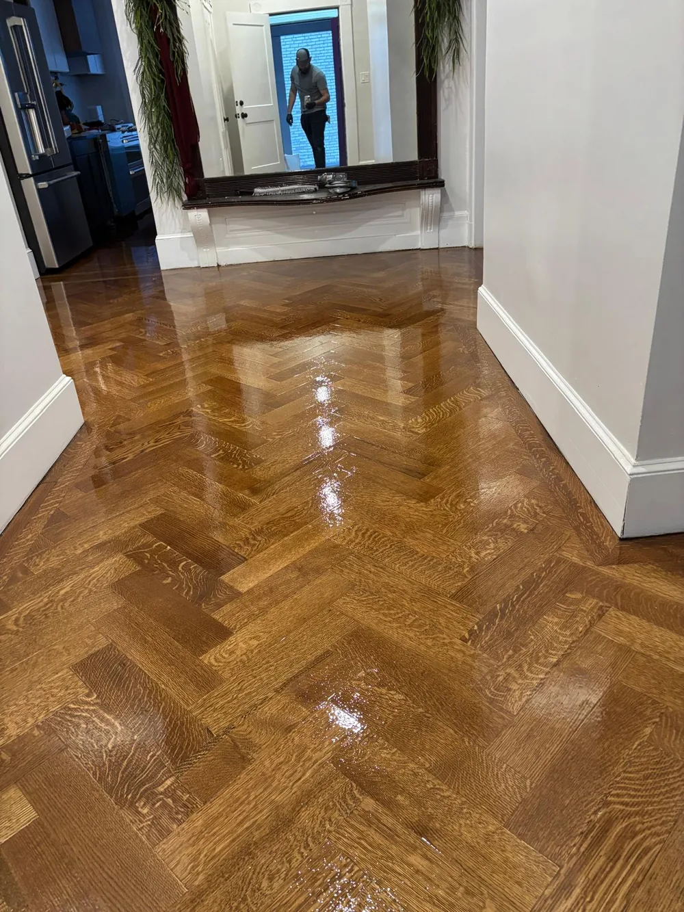

Hardwood Floor Refinishing Winchester MA
Original oak, borders, and herringbone sanded with care, stain colors tested on your own boards, and big houses finished one floor at a time.
Call (978) 754-8751 Get a Free EstimateOriginal oak, borders, and herringbone sanded with care, stain colors tested on your own boards, and big houses finished one floor at a time.
Call (978) 754-8751 Get a Free EstimateHardwood floor refinishing in Winchester MA usually means working on floors that are worth protecting. Many homes here still have the oak that went in when the house was built, and in the older Colonial Revival, Tudor, and Victorian houses that oak often comes with a border around the dining room, an inlay at the front hall, or a herringbone pattern in the living room. Those floors can look better than new, but only if the sanding is done by someone who respects how much wood is left and how the pattern runs. JPN Hardwood Floors is based next door in Medford and refinishes Winchester floors with that kind of patience, from a single family room to every level of a large house.
A lot of Winchester's housing was built to last, and the flooring shows it. Select oak, quartersawn boards in some front rooms, and decorative details that were laid by hand decades ago. Those floors have also had a long life. Many have been sanded two or three times already, sometimes by crews that pushed too hard at the edges or flattened the corners of a border. When we walk a house in Winchester Center or up in the Highlands, the first thing we do is measure what is left, because the next sanding has to leave enough wood for the one after it.
That is why we do not treat a refinish here as a quick job. A floor with a walnut or mahogany border, or a herringbone field that changes grain direction every few inches, takes more time at the sander and more hand scraping. The payoff is a floor that keeps its original character instead of looking like it was planed flat.

Color is the biggest decision most Winchester homeowners make on a refinish, and it is the one people worry about most. Lighter natural tones on white oak have become very popular, and so have soft modern grays, warm browns, and mixed custom blends. Traditional homes also look great in the deeper colors they were often finished in originally. There is no single right answer, which is exactly why we sample.
After the floor is sanded, we put several swatches right on your boards, in the room that matters most to you. You look at them in morning light and evening light, next to your trim and cabinets, and decide. Red oak and white oak take stain differently, and a color that looks perfect on a sample board at a showroom can turn out quite different on a floor that is close to a hundred years old. Seeing it on your own wood removes the guessing.
We price by square foot, floor condition, repairs, pattern work, and finish. Large homes are often quoted floor by floor so you can phase the project. These are typical Greater Boston ranges to help you plan.
| Type of work | Typical range |
|---|---|
| Standard refinishing (sand and finish) | $3 to $5 per sq ft |
| Refinishing with a custom stain color | $4 to $7 per sq ft |
| Borders, inlays, herringbone, or heavy repairs | Added per the estimate |
| Stairs (priced separately, more hand work) | $40 to $75 per step |
These ranges are for planning only. Every estimate is documented line by line, and the price you approve is the price you pay.

Good oak lasts a long time, but the finish on top does not. Here is what tells us it is time:
A single level of a typical home usually takes three to five working days plus cure time. Pattern floors and bigger rooms take longer, and we build that into the schedule from the start.
Many Winchester families phase the job by floor, so the bedrooms stay usable while the first floor is done, then switch. With a water-based finish, it is often possible to stay home through most of the project.
We keep the dust contained at the machine, protect the rooms we are not working in, and clean up at the end of every day so the rest of the house stays livable.
The floors here are often too valuable to learn on. These are the errors we see most:

We work with general contractors, builders, and designers on renovations and new homes in Winchester. On a remodel, we can refinish the original floors and weave in new boards where walls moved, so the old and new areas read as one floor.
On new construction, we sand and finish site-finished floors to the schedule the builder sets. We are insured, provide written scopes and video for the project file, and keep one point of contact through the job.
We sand with care, keep the dust contained, show up on the agreed dates, and charge the price on the approved estimate. If we find something hidden under the old finish, such as water damage or failed repairs, we show you before any extra work is done.
Every job is recorded from bare wood to the final coat, and we walk the finished floor with you before we call it done. JPN is owned and run by Janderson Francisco.
Pattern floors are where a refinish succeeds or fails. In a straight strip floor, the sander runs with the grain and the surface comes out flat. In a herringbone, the grain changes direction every board, and in a bordered room the field and the border usually run at right angles. A crew in a hurry will run the big machine straight across, which leaves cross-grain scratches and can scoop out softer pieces.
We approach these floors in stages. The field gets the main sanding at angles that suit the pattern, then the border is worked separately with smaller tools and hand scraping. Corners where the border miters get extra attention, because that is where the detail is easiest to lose.
Inlays made of a contrasting wood, such as walnut or a darker species set into oak, sand at a different rate than the boards around them. We go lighter there and check often, so the inlay keeps its sharp edge and its color stays rich.
If a border or inlay has a missing or damaged piece, we can usually cut and fit a replacement from matching stock before sanding. Once the floor is finished, the repair should blend in with the rest of the pattern.
The two main finish families look and behave differently, and in a home like many in Winchester it is worth understanding both before you pick.
Water-based finish dries clear and stays clear. It keeps natural white oak looking pale and fresh, and it does not add the amber tone that older floors often have. It has lower odor, dries quickly, and lets us put down multiple coats in less time, which makes it easier to stay in the house. Higher-end water-based products are very durable.
Oil-based finish adds warmth. On red oak and on traditional stains it gives that deeper, honey look that many people associate with an older home, and it deepens over the years. It takes longer to dry between coats, it has a stronger smell for several days, and it usually means planning to be out of the house for part of the job.
There is also the option of a penetrating oil or hardwax oil for people who want a low-sheen, natural look. It feels closer to bare wood and can be spot-repaired, but it needs more regular maintenance. We bring samples of each finish type so you can see and touch them on your own floor before deciding.
Plenty of Winchester houses have hardwood on the first floor, up the stairs, and through every bedroom, sometimes with a finished third floor on top. Refinishing all of it at once is the fastest way, but it means the whole family has to be somewhere else for a week or more.
Phasing is the common alternative. We usually start with the first floor, since it gets the most wear and is the most visible. While we work there, the family lives upstairs. Once the first floor has cured enough to walk on, we move to the stairs and the second floor. The same stain and sheen go on every level so the house looks like one project, not three.
The order matters. Stairs connect the levels, so we schedule them for a point when you have a way around them or can plan around a day or two without them. Stairs are priced per step, usually $40 to $75, and include sanding, hand work on the nosings and risers, and the same finish as the floors.
If you are planning a project that spans several floors, tell us during the estimate. We can quote each level separately so you can decide what to do now and what to leave for next year.
If you are getting ready to sell, refinished floors are one of the improvements that buyers notice right away. Winchester listings are usually photographed well, and a floor with worn traffic paths or an orange old finish stands out in those photos.
The right approach depends on the timing and the floor. If the wood is in good shape and only the finish is tired, a screen-and-recoat can freshen it quickly and leave the full sanding for the next owner. If the floor is scratched, stained, or the color feels dated, a full refinish with a current natural or light-neutral tone tends to appeal to the widest range of buyers.
We fit the work into your listing schedule, usually after painting and before staging and photos. Our written estimate and recorded video also make it simple to show a buyer exactly what was done to the floors and when.
Many Winchester homes sit close to the Mystic Lakes, Wedge Pond, and the wooded edge of the Middlesex Fells Reservation. It is a big part of what people love about living here, and it also means more moisture in the air in summer and more mud and grit at the back door.
Wood floors react to that. In humid months the boards swell slightly, and in winter, with the heat running, they dry and small gaps open between them. That seasonal movement is normal for solid oak in New England. What we look for is the difference between normal movement and real trouble, such as cupping over a damp basement or dark staining near a door where water gets tracked in.
When we find those problems, we deal with them before refinishing, because a new finish over a wet or cupped floor will not last. Sometimes the fix is replacing a few boards, and sometimes it is a conversation about a dehumidifier or a better mat at the door. A stable floor holds its finish much longer.
Winchester has both kinds of houses, and they call for different thinking. In an older home, the priority is saving original wood. We check the wear layer room by room, look for old nails and patches, and plan the sanding so the floor still has life left when we finish.
In newer construction, the floors are often wide-plank white oak, site finished or prefinished. Site-finished floors refinish much like older solid oak, with plenty of wood to work with. Prefinished floors, and some engineered floors, have a thinner top layer and sometimes beveled edges, so they may be better suited to a recoat than a full sand. We tell you which one your floor is before we quote.
Some homes have both: an original front section and a newer addition or kitchen. Getting the old and new wood to look like one floor is a matter of matching species, adjusting the stain, and sometimes weaving new boards into the old where the two meet.
After the final coat, give the floor its full cure time before putting rugs back down, since a rug can trap the curing finish and leave a mark. Light furniture can usually go back sooner. Put felt pads under every chair and table leg.
For cleaning, a dry dust mop and a damp mop with a cleaner made for finished wood are all you need. Avoid steam mops, oil soaps, and shine products, which leave residue that can make a future recoat harder.
Mats at each door help a lot, especially in winter when sand and salt come in from the walk and the driveway. Keep pets' nails trimmed, and wipe up water spills quickly near sinks and doors.
With good care, a recoat every several years can keep the floor looking fresh and push the next full sanding far into the future, which is exactly what you want for an original oak floor.
Winchester sits right next to Medford, so our crew is a short drive from our Medford base for estimates, color samples, and multi-floor projects that run over several weeks. We work throughout Winchester Center, Wedgemere, the West Side, and the Highlands. Winchester is known for Colonial Revival, Tudor, and Victorian homes and for large, well-kept houses with original oak floors, some with borders, inlays, or old herringbone in the formal rooms, alongside newer custom construction, so we know the floors under these homes and how to bring them back or build them new.
The same JPN crew works in the towns around Winchester. Each local page covers costs, neighborhoods and real projects for that town:
Not on the list? We cover a 100-mile radius from Medford. See Hardwood Floor Refinishing across Greater Boston.
Real floors from JPN projects across Medford and Greater Boston, done right, on time, and dust-free.
Founded and run by Janderson Francisco, JPN is a full-service hardwood flooring company based in Medford. Every estimate is documented line by line, every job is dust-contained, and we film our work from bare wood to final coat so you see exactly what you paid for.
Get your free estimateReal homeowners and builders across Greater Boston, straight from our Google Business Profile.

I had an excellent experience with JPN Hardwood Floors! Their team was professional, punctual, and paid close attention to every detail. The quality of their work exceeded my expectations, and the floors turned out absolutely beautiful. They kept everything clean and completed the project on time. I highly recommend them to anyone looking for reliable, high-quality flooring services. Five stars!
We've been working with JPN Hardwood Floors for a long time, and they consistently do an excellent job. Their entire team is professional, reliable, and takes great pride in their work. The quality of their hardwood flooring work is always great, and they are great to work with. We highly recommend them to anyone looking for a trustworthy and skilled hardwood flooring company!

I'm impressed by the excellence of the work delivered. You can truly see the care and professionalism in every detail.

Amazing work! Professional, reliable and highly recommend!
Very attentive, has great prices, and the work is simply impeccable. Thank you very much!
A clean home when we're finished and the completion date we quoted, or we make it right. Licensed, fully insured, and serving Medford, MA within 100 miles.